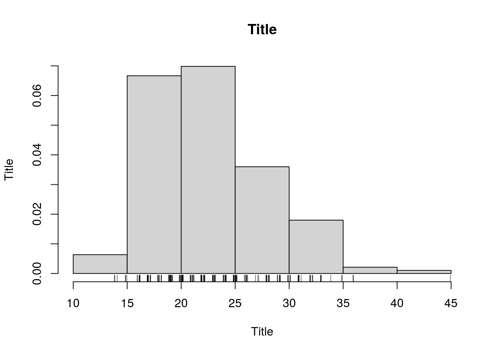
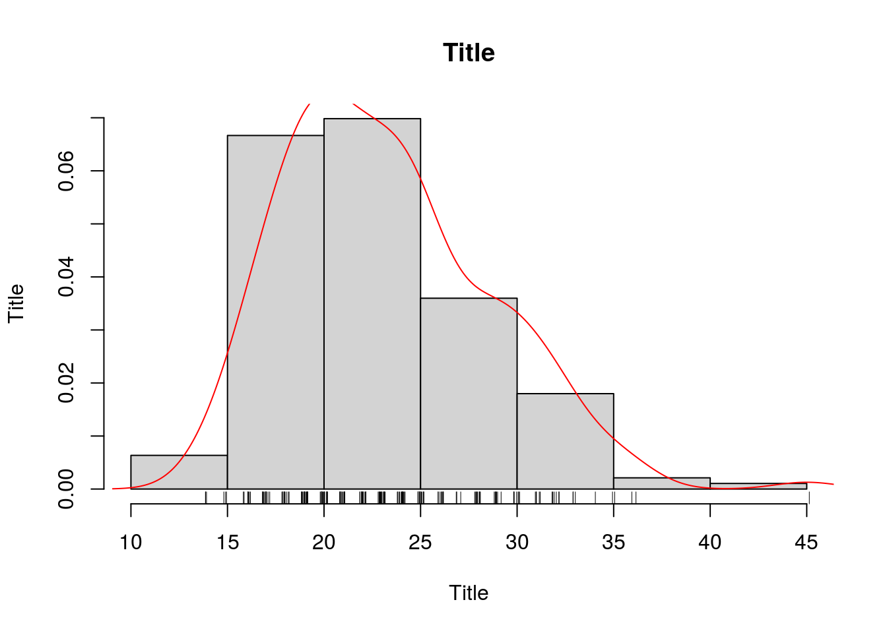

CookBook Ferramentas Estatísticas em R
16/10/20
Chapter 1 Análise exploratória
1.1 Fundamentos teóricos
É importante entender os tipos das variáveis consideradas, assim como a distribuição probabilística de origem.
1.1.1 Distribuição probabilística normal
A distribuição probabilística normal, também conhecida como distribuição de gaussiana, é apenas uma das distribuições matemáticas de probabilidade. É caracterizada por ser parametrizada, possuir dados contínuos, concentração dos valores em torno da média, um desvio padrão (que caracteriza a distância média dos dados à média), simetria em torno do valor central e baixa frequência de valores extremos.
1.1.2 Teorema do limite central
Postulado inicialmente pelo matemático francês Abraham de Moivre, o teorema conclui que uma série de dados que não possui comportamento semelhantes à uma distribuição probabilística normal, quando adicionados mais dados referente ao mesmo evento, sua curva de distribuição probabilística irá tender a assemelhar-se com uma distribuição normal.
1.1.3 Gramática de dados
Após fase de coleta, é possível que a grande quantidade de dados não permita uma visualização clara dos eventos e desfechos avaliados, até por que muitos podem estar em forma de caracteres numéricos ou valores lógicos TRUE/FALSE ou YES/NO. Para isso, os recursos gráficos facilitam a interpretação dos dados. É muito comum que esses dados sejam representados em gráficos.
1.2 Medidas de tendência central
As medidas de tendência central se referem a formas de definir um valor central dentro de uma distribuição probabilística, elas podem ser uma média, mediana ou moda. A média é a forma mais utilizada, ela representa um ponto que minimiza a distância total em relação a outros pontos.
1.2.0.1 1.2.3.1.Média
1.2.0.1.1 1.2.3.1.1.Média simples
Função: x é a variável de entrada na.rm é utilizado para remover entradas com valores faltando.
1.2.0.2 1.2.3.2.Mediana
1.2.0.2.1 1.2.3.2.1.Mediana simples
Função:
x é a variável de entrada. na.rm é utilizado para remover entradas com valores faltando.
1.2.0.3 1.2.3.3.Moda
1.2.0.3.1 1.2.3.3.1.Moda simples
No R puro não existe a função moda, então uma opção é criar uma função que avalie os valores, e identifique o de maior ocorrência. Função:
y <- BD$age
moda <- function(y, na.rm = T/F) {
if(na.rm){
y = y[!is.na(y)]
}
uy <- unique(y)
tab <- tabulate(match(y, uy))
uy[tab == max(tab)]
}
moda(y)x é a variável de entrada na.rm é utilizado para remover entradas com valores faltando. Outra opção é instalar bibliotecas que contenham ferramentas semelhantes.A modeest é uma opção. Vamos instalá-la e carregá-la:
x é a variável de entrada
1.3 Dispersão
É forma de caracterizar um conjunto de dados quanto ao seu comportamento aleatório de dispersão de valores. Existem vários modelos de caracterizar o quão disperso um conjunto de dados está, incluindo desvio padrão, coeficiente de variação, coeficiente de dispersão quartil, entre outros.
1.4 Assimetria
Skewness
1.5 1.2.4.Gráficos
1.5.0.1 1.2.4.1.Correlação
1.5.0.1.1 1.2.4.1.1.Preditores contínuos
Função:
x é o preditor 1, na abscissa y é o preditor 2, na ordenada main é o título do gráfico xlab é o título da abscissa ylab é o título da ordenada
1.5.0.1.2 1.2.4.1.2.Preditores categóricos
Função:
x é o preditor 1, na abscissa y é o preditor 2, na ordenada main é o título do gráfico
xlab é o título da abscissa
ylab é o título da ordenada
OBS: é possível identificar no boxplot os limites, outliers, terceiro, segundo (mediana) e primeiro quartis.
1.5.0.2 1.2.4.2.Histogramas
Função:
BD <- readxl::read_excel("data/lbw.xlsx") # Requer lib reaxl
hist(BD$age, main = "Title", xlab = "Title", ylab = "Title", prob = T)
rug(jitter(BD$age))#;lines( density(x),col="red" ) x é a variável de interesse main é o título do gráfico xlab é o título da abscissa (Variável)
ylab é o título da ordenada (Frequência)
Breaks são pontos de divisão de cada coluna, na abscissa
rug/jitter mostra a distribuição fina de frequência, na abscissa
1.5.1 1.2.5.Exercícios
1.5.1.1 1.2.5.1.Qual a idade materna média no grupo de fumantes e não fumantes?
## 0 1
## 23.42609 22.945951.5.1.2 1.2.5.2.Plote o gráfico da distribuição das idades maternas analisadas
hist(BD$age, main = "Title", xlab = "Title", ylab = "Title", prob = T)
rug(jitter(BD$age));lines( density(BD$age),col="red" ) #### 1.2.5.3.Qual a mediana do peso materno entre as raças?
## 1 2 3
## 129.5 129.0 119.01.5.1.3 1.2.5.4.Qual a moda da idade materna entre os grupos com e sem hipertensão?
## $`0`
## [1] 20
##
## $`1`
## [1] 19 21 22 25